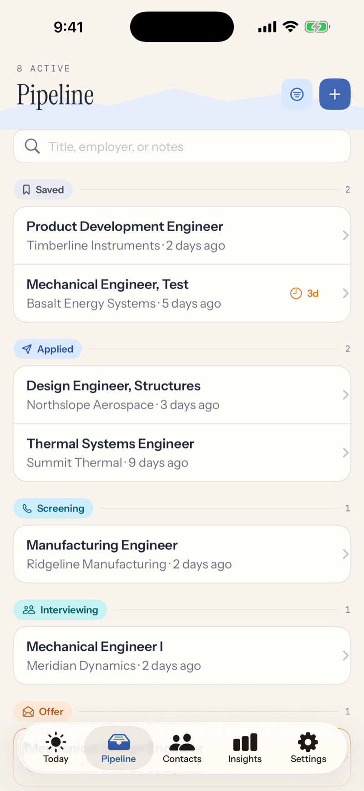
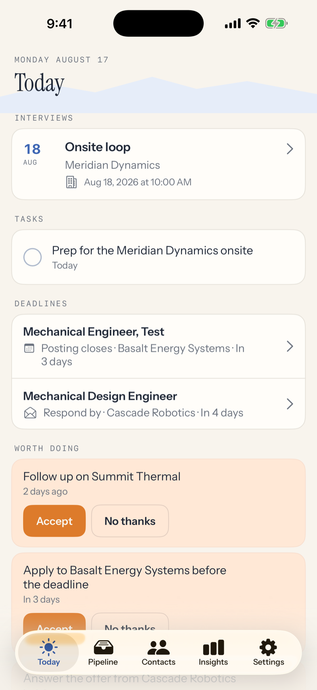
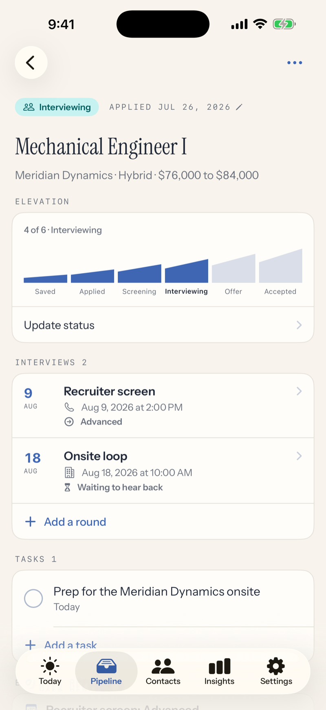
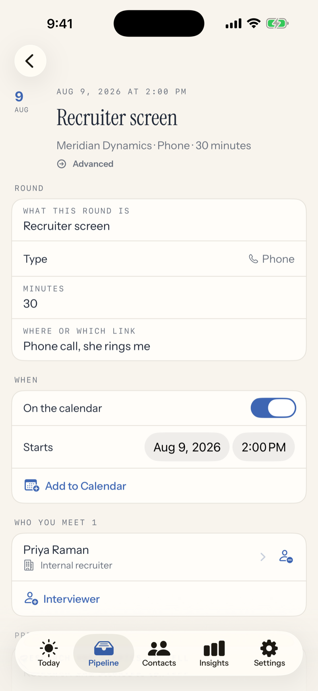
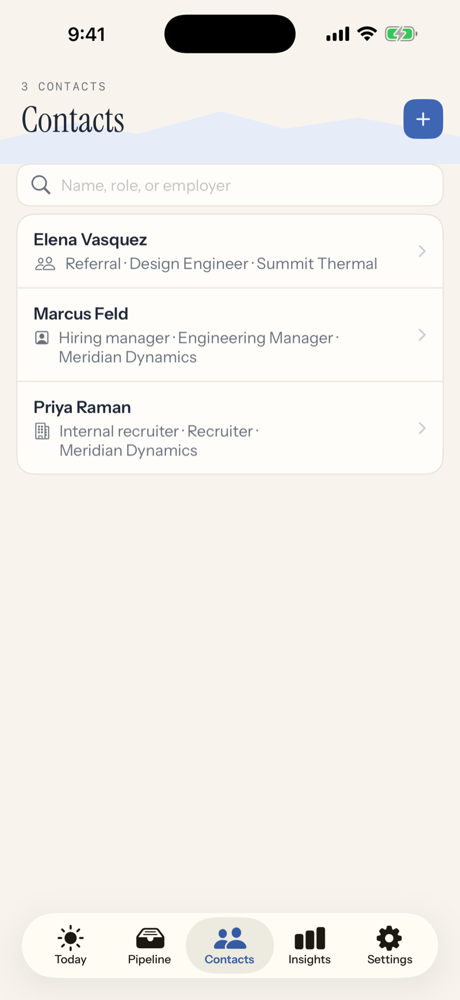
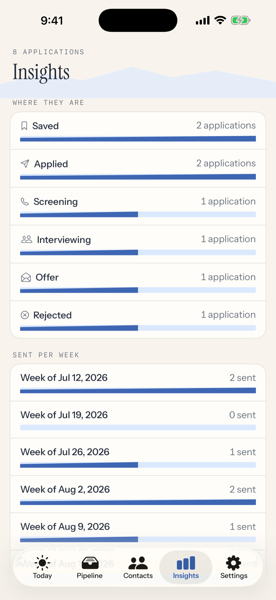
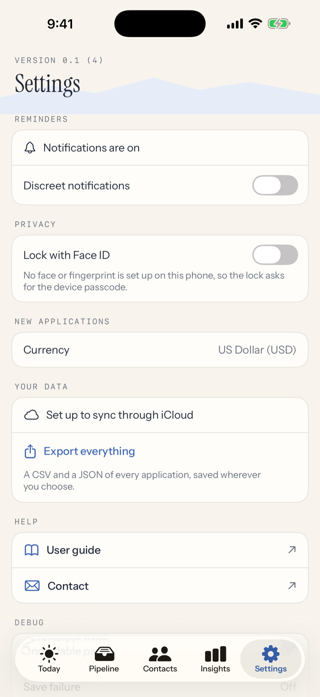

User guide
Send It tracks a job search the way it actually happens: postings you mean to apply to, applications working their way through interviews, and the follow-ups that keep things moving. Everything lives on your phone and in your own iCloud. This guide walks the whole app; if you would rather just start, save one posting and the app will show you the rest.
From Safari or any browser, tap the share button on a job posting and choose Send It. The role title, the link, and the text of the posting are captured together, so the record survives even after the employer takes the posting down.
You can also add one by hand: the + button on the Pipeline tab. Only a title is required. Everything else can come later.

Every application sits at one of six stages on the way up: Saved, Applied, Screening, Interviewing, Offer, Accepted. There are also four ways out: Rejected, Withdrawn, Ghosted, and Declined. The pipeline groups your applications by stage so you can see the whole climb at a glance.
Saved matters. It is the wishlist stage, for postings you intend to apply to. Give one a deadline and Send It reminds you before it closes.
To move an application, open it and tap Update status. The app offers only moves that make sense from where you are. Tapped the wrong one? The same control offers Move back. The history keeps both entries, so the record always says what really happened.
Swiping a row left archives it. Nothing is ever deleted: archived applications are whole, and the Filters sheet brings them back with one switch.
The search field matches titles, employers, and notes. The filter button narrows by priority, source, or work mode.

Today answers one question: what needs you now. Upcoming interviews, tasks due, deadlines approaching, and applications that have gone quiet all surface here. When there is nothing, it says so, and that is a real answer.
Worth doing is the app making suggestions: follow up on an application that has been quiet, apply before a deadline closes, answer an offer. Suggestions are only ever offers. Accept one and it becomes a task; decline it and it stays gone. The app never changes anything on its own.


Interviews are rounds, because a real process has several. Each round holds its own schedule, the people you meet, your prep notes and the questions you want to ask, and afterward, what they asked and how it went. Write the debrief the same day; future you will be glad.
A round's result keeps an honest distinction: Waiting to hear back means an answer is still expected. No result recorded means the process ended and nobody said anything. Those are different facts and the app never confuses them.
Add to Calendar puts a round on your calendar, with your permission. After an interview passes, Send It offers a thank-you note task; marking one sent records the date.
When an employer writes or calls, log it on the application: Log a response. If it arrived a few days ago, set the arrival date so your numbers stay honest. Replies show right on the record and feed the response rate in Insights.

Recruiters, hiring managers, and referrals live on the Contacts tab. Link a contact to an application, or add one as the interviewer on a round. Import from Contacts pulls a name, phone, and email straight from your phone's address book; the app sees only the person you pick.
Any application can hold files: your resume, an offer letter, an employment agreement, whatever the process produces. Attach from the Files picker, rename them to whatever makes sense, and view them right in the app. Attachments sync with everything else.

Insights answers questions with your own data: where your applications are, how many you send each week, how often employers respond, how far each source gets you. Every number states its denominator, and when there is not enough data to say something, the screen says that instead of pretending. A response rate only counts the replies you log, so log them.

Everything is saved on your device the moment you enter it. If your device is signed into iCloud, Send It syncs to your private iCloud so a new phone picks up where you left off; Settings shows you plainly whether sync is set up. There are no accounts and no servers of ours.
Export everything in Settings produces CSV and JSON files of your whole search, yours to keep anywhere.
A job search is sensitive, especially while employed. Two switches in Settings are built for that: Lock with Face ID covers the app whenever you leave it, and discreet notifications keep employer names off your lock screen. Both are per-device choices and never sync.
The support page covers common ones, and jeff@loboz.com answers the rest.